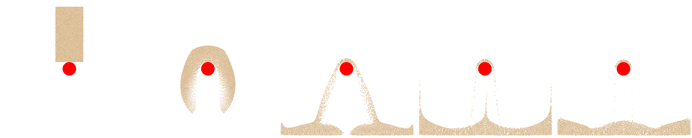

Putting It All Together
In an MPM simulation, simulation data include material point data and grid data, we defined material point data following Section 25.1, with one additional used for APIC transfer scheme and log_J_diff as the volume correction term used in Section 28.1. The sample points are sampled using the Poisson-disk sampling. We define the 2D background as a dense grid, which can be further optimized as a sparse grid, we leave this as the future work for readers:
Implementation 28.3.1 (Simulation Data).
# simulation setup
grid_size = 128 # background Eulerian grid's resolution, in 2D is [128, 128]
dx = 1.0 / grid_size # the domain size is [1m, 1m] in 2D, so dx for each cell is (1/128)m
dt = 2e-4 # time step size in second
ppc = 8 # average particle-per-cell
density = 400 # kg / m^3
E, nu = 3.537e5, 0.3 # sand's Young's modulus and Poisson's ratio
mu, lam = E / (2 * (1 + nu)), E * nu / ((1 + nu) * (1 - 2 * nu)) # sand's Lame parameters
sdf_friction = 0.5 # frictional coefficient of SDF boundary condition
friction_angle_in_degrees = 25.0 # Drucker Prager friction angle
D = (1./4.) * dx * dx # constant D for Quadratic B-spline used for APIC
# sampling material particles with poisson-disk sampling (Section 25.1)
poisson_samples = poisson_disk_sampling(dx / np.sqrt(ppc), [0.2, 0.4]) # simulating a [30cm, 50cm] sand block
# material particles data (Section 25.1)
N_particles = len(poisson_samples)
x = ti.Vector.field(2, float, N_particles) # the position of particles
x.from_numpy(np.array(poisson_samples) + [0.4, 0.55])
v = ti.Vector.field(2, float, N_particles) # the position of particles
vol = ti.field(float, N_particles) # the volume of particle
vol.fill(0.2 * 0.4 / N_particles) # get the volume of each particle as V_rest / N_particles
m = ti.field(float, N_particles) # the mass of particle
m.fill(vol[0] * density)
F = ti.Matrix.field(2, 2, float, N_particles) # the deformation gradient of particles
F.from_numpy(np.tile(np.eye(2), (N_particles, 1, 1)))
C = ti.Matrix.field(2, 2, float, N_particles) # the affine-matrix of particles
diff_log_J = ti.field(float, N_particles) # tracks changes in the log of the volume gained during extension
# grid data
grid_m = ti.field(float, (grid_size, grid_size))
grid_v = ti.Vector.field(2, float, (grid_size, grid_size))
At the beginning of each simulation step, the grid must be cleared before accumulating new particle-to-grid transfers.
Implementation 28.3.2 (Reset Grid Data).
def reset_grid():
# after each transfer, the grid is reset
grid_m.fill(0)
grid_v.fill(0)
During the particle-to-grid (P2G) transfer, we use quadratic B-spline interpolation to distribute particle mass, momentum, and internal force contributions to neighboring grid nodes.
Implementation 28.3.3 (Particle-to-Grid (P2G) Transfers).
@ti.kernel
def particle_to_grid_transfer():
for p in range(N_particles):
base = (x[p] / dx - 0.5).cast(int)
fx = x[p] / dx - base.cast(float)
# quadratic B-spline interpolating functions (Section 25.2)
w = [0.5 * (1.5 - fx) ** 2, 0.75 - (fx - 1) ** 2, 0.5 * (fx - 0.5) ** 2]
# gradient of the interpolating function (Section 25.2)
dw_dx = [fx - 1.5, 2 * (1.0 - fx), fx - 0.5]
P = StVK_Hencky_PK1_2D(F[p])
for i in ti.static(range(3)):
for j in ti.static(range(3)):
offset = ti.Vector([i, j])
dpos = (offset.cast(float) - fx) * dx
weight = w[i][0] * w[j][1]
grad_weight = ti.Vector([(1. / dx) * dw_dx[i][0] * w[j][1],
w[i][0] * (1. / dx) * dw_dx[j][1]])
grid_m[base + offset] += weight * m[p] # mass transfer
grid_v[base + offset] += weight * m[p] * (v[p] + C[p] @ dpos) # momentum Transfer, APIC formulation
# internal force (stress) transfer
fi = -vol[p] * P @ F[p].transpose() @ grad_weight
grid_v[base + offset] += dt * fi
During the grid-to-particle (G2P) transfer, we gather the updated velocity and affine velocity matrix from the background grid, and compute the trial elastic deformation gradient prior to enforcing plasticity via return mapping.
Implementation 28.3.4 (Grid-to-Particle (G2P) Transfers).
@ti.kernel
def grid_to_particle_transfer():
for p in range(N_particles):
base = (x[p] / dx - 0.5).cast(int)
fx = x[p] / dx - base.cast(float)
# quadratic B-spline interpolating functions (Section 25.2)
w = [0.5 * (1.5 - fx) ** 2, 0.75 - (fx - 1) ** 2, 0.5 * (fx - 0.5) ** 2]
# gradient of the interpolating function (Section 25.2)
dw_dx = [fx - 1.5, 2 * (1.0 - fx), fx - 0.5]
new_v = ti.Vector.zero(float, 2)
new_C = ti.Matrix.zero(float, 2, 2)
v_grad_wT = ti.Matrix.zero(float, 2, 2)
for i in ti.static(range(3)):
for j in ti.static(range(3)):
offset = ti.Vector([i, j])
dpos = (offset.cast(float) - fx) * dx
weight = w[i][0] * w[j][1]
grad_weight = ti.Vector([(1. / dx) * dw_dx[i][0] * w[j][1],
w[i][0] * (1. / dx) * dw_dx[j][1]])
new_v += weight * grid_v[base + offset]
new_C += weight * grid_v[base + offset].outer_product(dpos) / D
v_grad_wT += grid_v[base + offset].outer_product(grad_weight)
v[p] = new_v
C[p] = new_C
# note the updated F here is the trial elastic deformation gradient
F[p] = (ti.Matrix.identity(float, 2) + dt * v_grad_wT) @ F[p]
Finally, we enforce the Drucker-Prager elastoplastic yield condition with volume correction via return mapping, and advance particle positions through advection.
Implementation 28.3.5 (Deformation Gradient and Particle State Update).
@ti.kernel
def update_particle_state():
for p in range(N_particles):
# trial elastic deformation gradient
F_tr = F[p]
# apply return mapping to correct the trial elastic state, projecting the stress induced by F_tr
# back onto the yield surface, following the direction specified by the plastic flow rule. (Section 26.2)
new_F = Drucker_Prager_return_mapping(F_tr, diff_log_J[p])
# track the volume change incurred by return mapping to correct volume, following https://dl.acm.org/doi/10.1145/3072959.3073651 sec 4.3.4
diff_log_J[p] += -ti.log(new_F.determinant()) + ti.log(F_tr.determinant()) # formula (26)
F[p] = new_F
# advection (Section 25.4)
x[p] += dt * v[p]
A full MPM simulation step consists of the following stages:
Implementation 28.3.6 (A Full MPM Simulation Step).
def step():
reset_grid()
particle_to_grid_transfer()
update_grid()
grid_to_particle_transfer()
update_particle_state()
